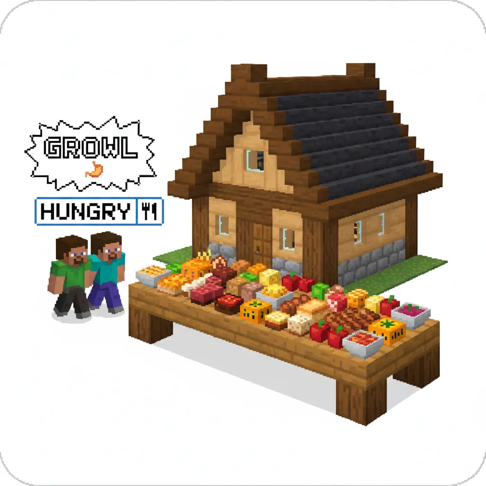
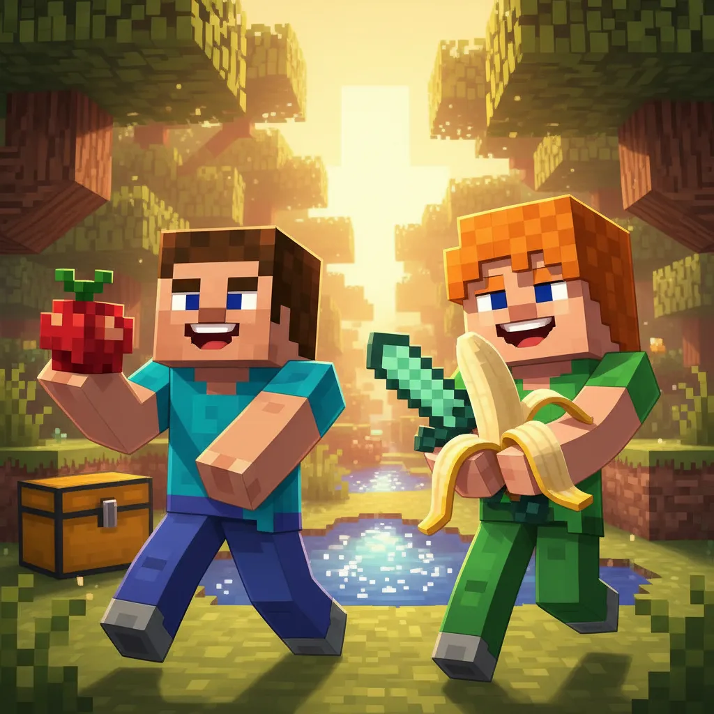
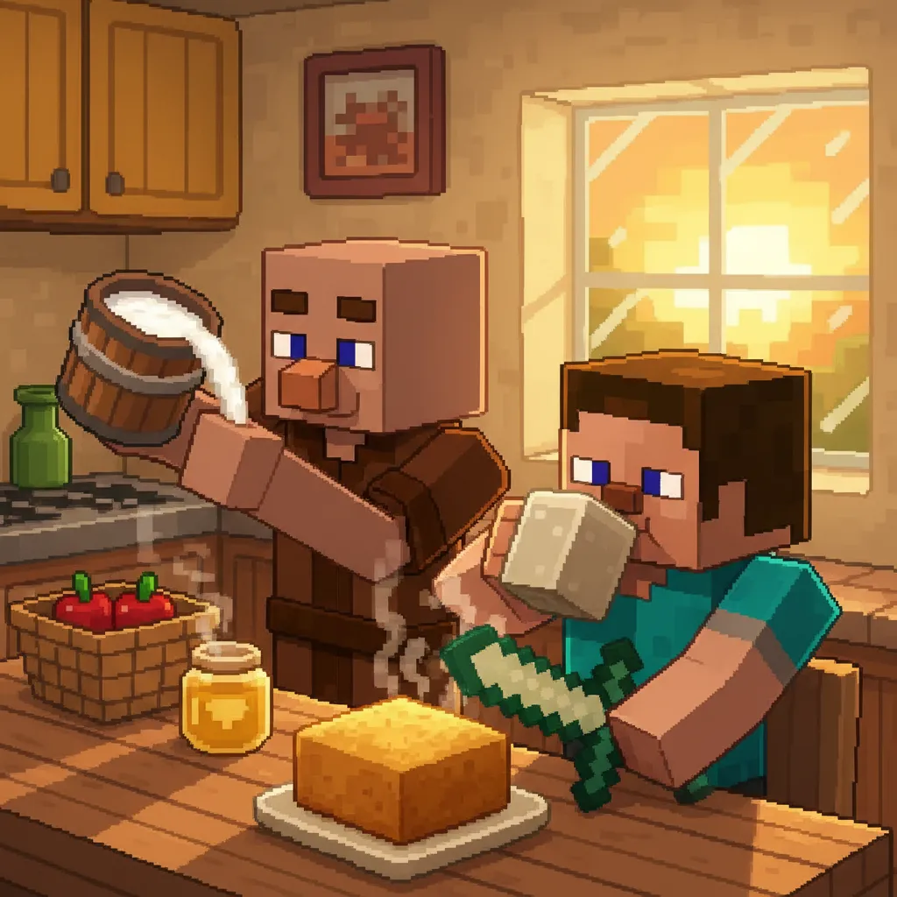
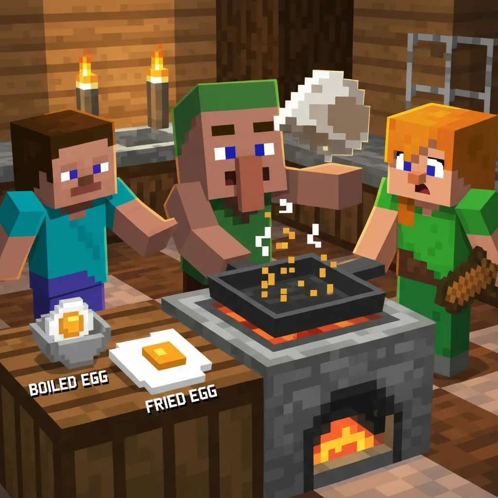
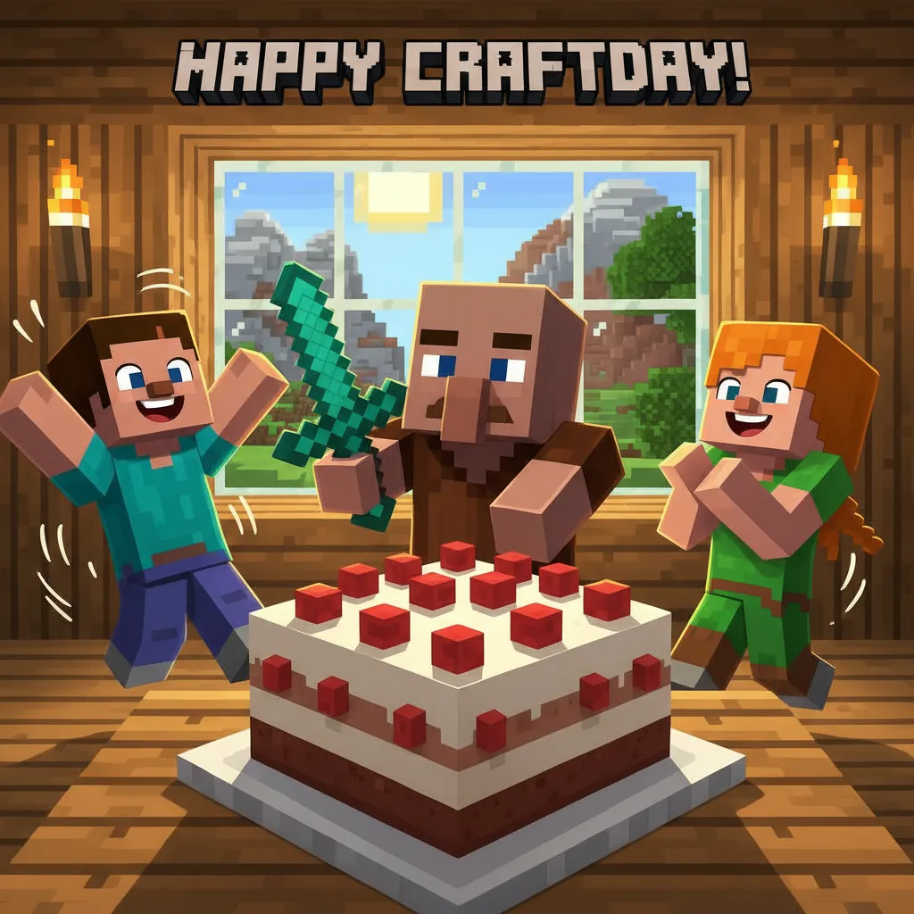
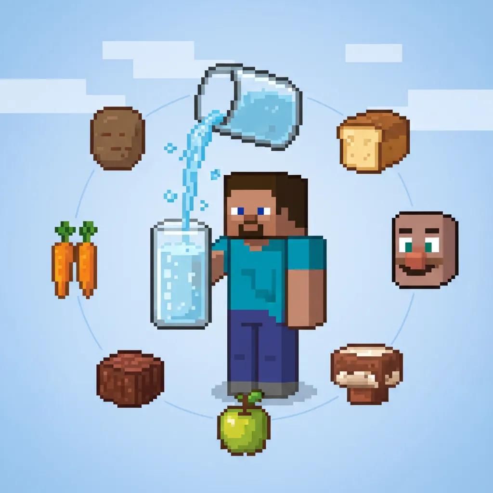
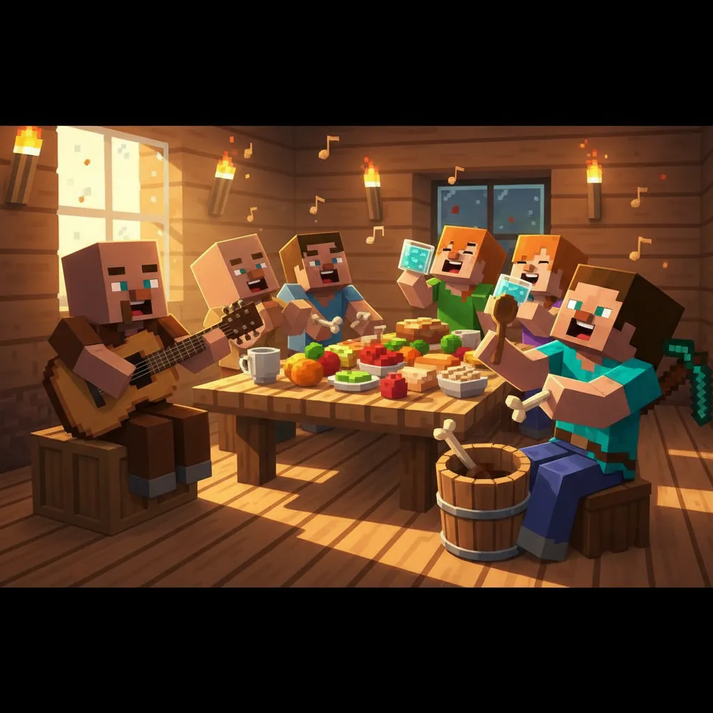
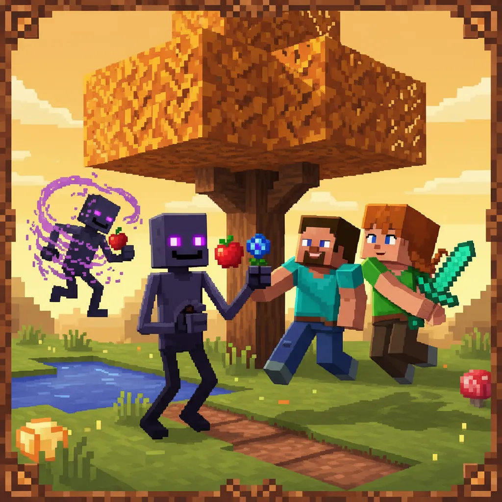
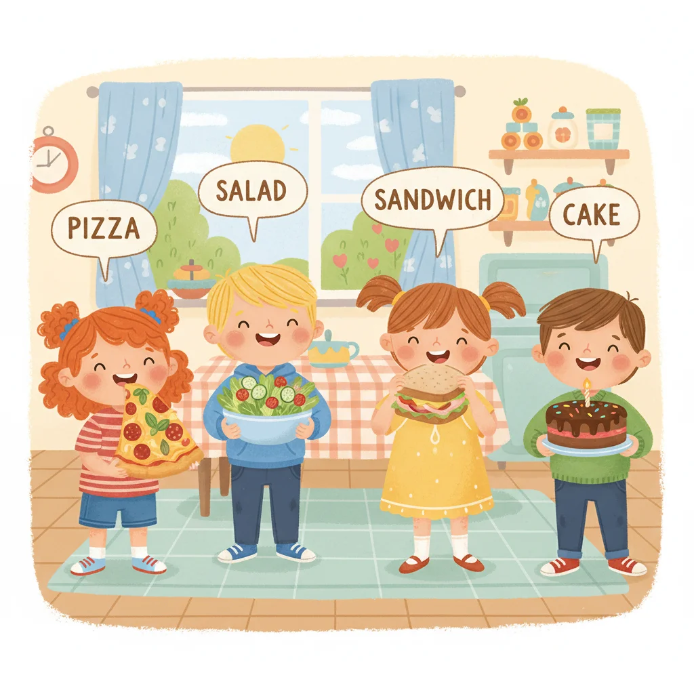

食物 · shíwù

👆 Tap any word to hear it! · 点击单词听发音
← swipe or use arrows to navigate
苹果 · píngguǒ

💡 "An apple a day keeps the doctor away!" 🍏
面包 · miànbāo

💡 Bread is made from flour, water, and yeast.
奶酪 · nǎilào

💡 Cheese is made from milk! 🥛 Mice love cheese! 🐭
鸡蛋 · jīdàn

💡 Eggs can be boiled, fried, or scrambled! 🍳
鱼 · yú

💡 Fish live in oceans, rivers, and lakes! 🌊🐠
饮料和谷物 · yǐnliào hé gǔwù

💡 Rice is a staple food for many people around the world! 🌏
水 · shuǐ

All five words have the /æ/ sound! · 都含有 /æ/ 音
👆 Tap each word to hear it pronounced
Sight Words · 视觉词
Practice reading these sentences:
配对游戏 · Instructions:
1️⃣ Tap an English word (e.g. "apple")
2️⃣ Then tap its Chinese translation (e.g. "苹果")
3️⃣ Match all 9 pairs to win! 🏆

✅ You learned 9 food words!
✅ You learned 5 sight words!
✅ You learned the /æ/ phonics sound!
✅ You can talk about food in English!
See you next lesson! 👋
下节课见！Keep up the amazing work! 🌟
Lesson 9 Complete · 第9课完成 ✅